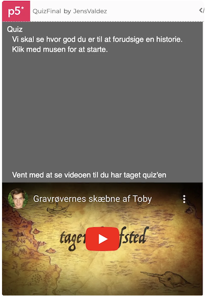

Opgave 3 - Quiz
Vi skal lave følgende quiz: https://editor.p5js.org/JensValdez/full/pJO9kT0hI

Du kan lige prøve quiz’en, så du kender funktionaliteten.
Når du skal lave en større opgave er det nemmest at dele den op i mindre delopgaver som du godt kan løse. For at hjælpe har jeg oprettet et par delopgaver. Hvis du går i stå må du gerne se på løsningenseksemplet for delopgaven. Herefter skal du selv prøve at løse den. Det er fint hvis du finder dine egne løsninger til delopgaverne. Det er dog en god ide altid at se løsningseksemplet for hver delopgave igennem og forstå det efter at du har løst en delopgave.
Det er en lidt avanceret opgave som har fokus på følgende:
- Hvordan man med fordel kan starte med at lave en generel løsning og herefter gøre den specifik. Det er således først i den sidste delopgave at man tilføjer hvad quiz’en handler om.
- Hvordan man gør koden nemmere at lave, læse og tilrette ved at adskilde data (spørgsmålene) og program logik.
- Hvordan man definere data strukturer (array’et med spørgsmål) og læser og opdaterer indholdet.
- Tilretning af HTML’en (i index.html), så der vises en indlejret youtube film.
- Hvordan man holder styr på programmets tilstand (gameState) til at styre dialogen med brugeren.
- Hvordan man kan starte med at lave den mest simple version af et spil men som stadig kan spilles hvorefter man gradvist tilføjer flere og flere lækre detaljer.
Start her
Start med at forstå start kode skabelonen:
let currentQuestion = 0;
let yPositionForQuestionsToStart = 0;
var questions = [
{
question: "Question 1",
options: ["Q1 Option 1", "Q1 Option 2", "Q1 Option 3"],
selected: -1,
correct: 0,
},
{
question: "Question 2",
options: ["Q2 Option 1", "Q2 Option 2", "Q2 Option 3"],
selected: -1,
correct: 0,
},
];
function setup() {
createCanvas(400, 320);
textSize(15);
fill(255);
}
function draw() {
background(100);
if (currentQuestion < questions.length) {
showQuestionsToAnswer();
}
}
function showQuestionsToAnswer() {
fill(0);
rect(10, 30, 380, 70);
yPositionForQuestionsToStart = 30;
fill(255);
text(questions[currentQuestion].question, 10, 20);
if (questions[currentQuestion].selected == -1) {
for (let i = 0; i < questions[currentQuestion].options.length; i++) {
yPositionForQuestionsToStart += 20;
text(
"Tryk " +
(i + 1) +
" på keyboarded: " +
questions[currentQuestion].options[i],
20,
yPositionForQuestionsToStart
);
}
} else {
currentQuestion++;
}
}
function keyPressed() {
if (currentQuestion < questions.length) {
if (key == "1") {
questions[currentQuestion].selected = 0;
}
if (key == "2") {
questions[currentQuestion].selected = 1;
}
if (key == "3") {
questions[currentQuestion].selected = 2;
}
}
}
og kopier koden ind i et nyt program i p5js editoren. Giv spillet et navn og husk at gemme løbende.
Delopgave 1:
Tilret så programmet har en gameState (ligesom vi havde i HeroMan og GrandPrix spillene). Spillet skal til at starte med have to tilstande QUIZ-QUESTIONS og QUIZ-FINISHED-SCREEN. Når Quiz’en er færdig kan du bare skrive at quizen er færdig uden at lave statistik på hvor mange spørgsmål der er svaret rigtig på.
Prøv løsningen til delopgaven her: https://editor.p5js.org/JensValdez/full/AvLZ0_BjO
Delopgave 2:
Tilret så brugeren får af vide hvor mange spørgsmål der er svaret rigtigt på (og ud af hvor mange spørgsmål) når quizen er færdig
Prøv løsningen til delopgaven her: https://editor.p5js.org/JensValdez/full/mbNUIcOJi
Delopgave 3:
Tilret så der også er en gameState ved navn QUIZ-START-SCREEN. Quiz’en skal starte når man klikker med musen.
Prøv løsningen til delopgaven her: https://editor.p5js.org/JensValdez/full/sEZNELSUh
Delopgave 4:
Tilret så de svar man har givet vises. Hvis man har svaret rigtigt skal teksten vises med grøn og ellers skal det vises med rød farve.
Prøv løsningen til delopgaven her: https://editor.p5js.org/JensValdez/full/Z-nXJSXCz
Delopgave 5:
Tilret så det er dine egne spørgsmål og svarmuligheder der vises, samt at man kan se videoen nedenfor for at se de korrekte svar.
Prøv løsningen til delopgaven her: https://editor.p5js.org/JensValdez/full/k5dTLT4qC
Delopgave 6:
Tilret så den youtube video som har har baseret quizen på vises under quiz’en
Prøv løsningen til delopgaven her: https://editor.p5js.org/JensValdez/full/pJO9kT0hI